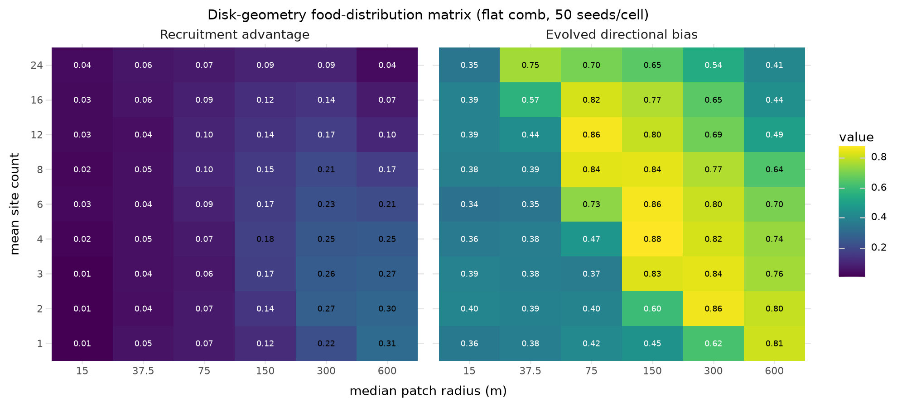
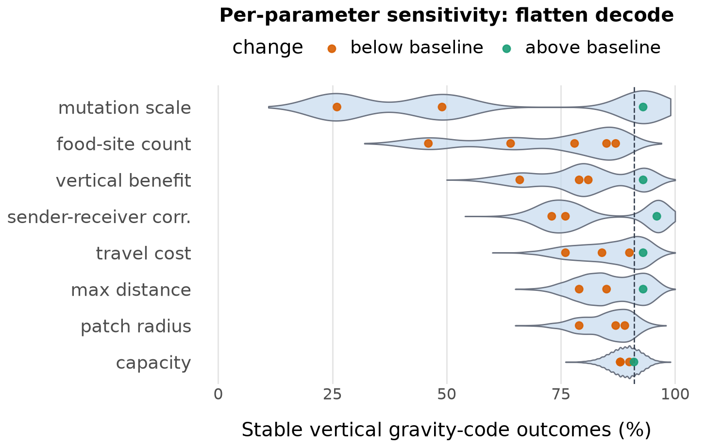
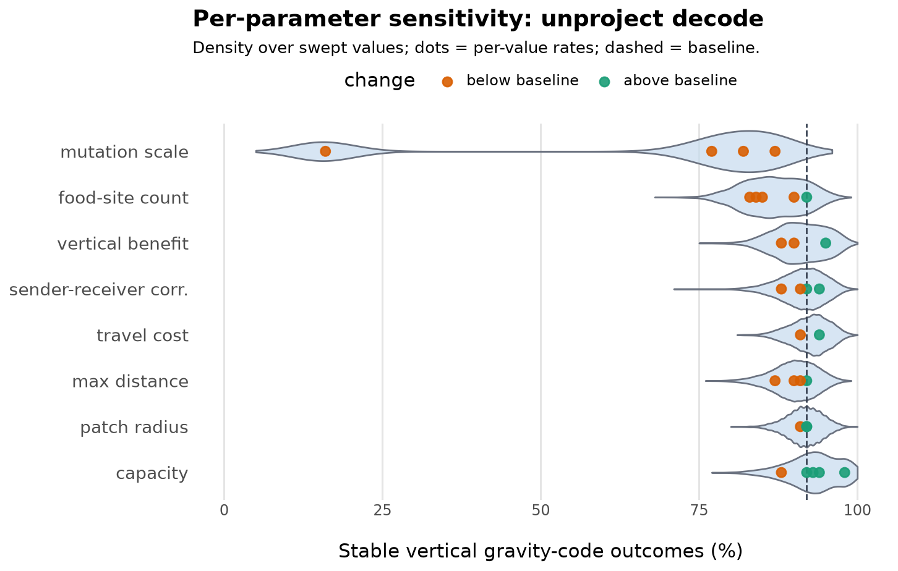
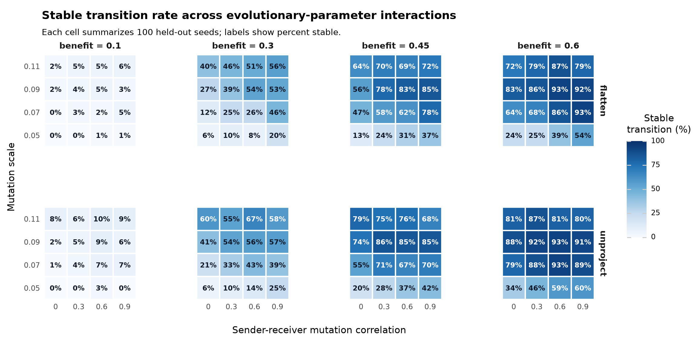

Honeybee waggle dances can recruit nestmates to resources away from the nest. One ecological question is when a costly spatial signal is worth maintaining, and a second evolutionary question is how a direct pointing signal could become a gravity-referenced vertical-comb code. Empirical and theoretical work suggests that dance value depends on resource density, patch size, reward, distance, and habitat (Sherman and Visscher 2002; Dornhaus and Chittka 2004; Dornhaus et al. 2006; Beekman and Lew 2008; Donaldson-Matasci and Dornhaus 2012; Schürch and Grüter 2014; I’Anson Price and Grüter 2015).
This report covers the current disk-geometry model run under two direct-decode variants and their tracked result files. The model is intentionally small: it asks whether horizontal-start populations can evolve both a vertical comb and a sender-receiver gravity code under simple foraging, inheritance, and mutation rules. The two variants differ only in how direct-pointing projects the food direction onto the comb plane – the flatten decode drops the component perpendicular to the comb plane, and the unproject decode inverts that projection – while all other model parameters and the evolutionary pipeline structure are identical.
Colonies are the reproducing entities. Workers are behavioral samples from heritable colony means. A colony has seven mean traits: directional-bias investment, receiver attention, sender transposition, receiver transposition, search limit, comb tilt, and comb orientation. Directional bias controls the concentration of dance signals; receiver attention controls whether a worker follows an available dance; sender and receiver transposition interpolate between direct pointing and a sun/gravity-referenced code.
Each foraging episode samples food sites from an ecologically grounded disk geometry, with all lengths in meters. Food sites are physical disk patches whose radius is drawn per site from a lognormal, independent of distance; the number of sites per episode is Poisson with an evolving mean; each foray’s outbound distance is drawn from a Gamma with the colony’s evolved mean rather than a hard range cutoff; a patch’s capacity scales with its area, so total resource grows with radius squared while per-visit value stays fixed; and recruitment is itself an evolvable, capacity-conditional decision. Workers act sequentially. If dances are available, a worker may follow one; otherwise it searches in a random direction. A successful worker adds a dance for the discovered site with its capacity-conditional propensity, whether it found the site independently or by following another dance, so an exhausted patch never seeds a dance. Dance cost is paid for every successful worker that produces a signal. The Direct-Pointing Communication and Food Distribution section characterizes this ecology on a flat comb; the vertical-transition pipelines then free the comb to tilt under the same geometry.
Comb geometry determines the available directional cues. Direct pointing projects the horizontal food direction onto the comb plane. Gravity-referenced communication uses the projection of gravity into the comb plane together with the episode sun azimuth. A horizontal comb has no gravity reference in the dance plane; the gravity cue strengthens as the comb becomes vertical. The transition experiments use axial comb orientation, so orientations that differ by 180 degrees represent the same comb plane.
For a worker with sender transposition , the encoded dance angle is a weighted circular mean of direct and gravity-referenced angles:
The emitted signal is sampled from a von Mises distribution centered on , with concentration proportional to directional-bias investment, and then perturbed by production noise. A receiver with transposition applies the analogous weighted decoding rule and interpretation noise.
Episode payoff is food value minus search/travel cost, dance cost, and attention cost. A vertical comb can multiply net episode payoff:
where is comb tilt and is the vertical-comb benefit. This benefit does not rescue a colony whose foraging payoff has collapsed. Daughter colonies are sampled in proportion to payoff. All heritable traits mutate with the shared mutation scale; sender and receiver transposition mutations may be correlated by .
Unless stated otherwise, runs use 60 colonies, 80 workers per colony, 120 generations, 50 foraging episodes per colony per generation, 12 foraging attempts per episode, food sites 750-6000 m from the nest, a median patch radius of 150 m (lognormal, log-sd 0.6), Gamma forays (shape 2), area-scaled capacity, food value 1, travel cost 2.67e-5 per meter, baseline dance cost 0, directional cue cost 0.02, attention cost 0.01, dance-production noise 0.18, interpretation noise 0.12, within-colony worker variation 0.08, horizontal initial combs, axial orientation, and the linear vertical-comb modifier .
A seed is counted as a stable vertical gravity-code outcome when final mean comb tilt is at least 0.80 and both final mean sender and receiver transposition are at least 0.50. Gravity reached means both transposition traits crossed 0.50 at any generation. A seed is counted as collapsed if mean success falls to 0.02 or below.
Workers in this model weight the direct and gravity-referenced codes continuously, through the sender and receiver transposition traits. The obvious alternative is a binary trait: each worker either points directly or refers to gravity, with no blending in between. The two are not interchangeable, and the difference flatters the blending assumption, so it is worth stating plainly.
This probe measures communication accuracy directly rather than running evolution. For each comb tilt it sweeps a single mixing parameter and compares a blender population, in which every worker blends both codes with sender and receiver transposition , against a chooser population, in which a fraction of workers use the gravity code purely and the rest the direct code purely, with dancer and follower drawn independently. A follower succeeds when the direction it recovers falls within 15 degrees of the true food direction, a hard threshold mirroring the angular food geometry; chance is 0.083. Dances are noiseless, so the comparison isolates the coding geometry. The decode is unproject, 20,000 pairs per cell.
| Blender, flat | Chooser, flat | Blender, 45° | Chooser, 45° | Blender, vertical | Chooser, vertical | |
|---|---|---|---|---|---|---|
| 0.00 | 1.000 | 1.000 | 0.583 | 0.584 | 0.084 | 0.085 |
| 0.25 | 1.000 | 0.602 | 0.523 | 0.378 | 0.206 | 0.139 |
| 0.50 | 1.000 | 0.314 | 0.377 | 0.252 | 0.393 | 0.310 |
| 0.75 | 1.000 | 0.141 | 0.274 | 0.220 | 0.852 | 0.594 |
| 1.00 | 0.083 | 0.081 | 0.271 | 0.261 | 1.000 | 1.000 |
The two populations agree at the endpoints, as they must, and diverge across the interior. Splitting the chooser pairs by type explains why. On a 45-degree comb, matched pairs score 0.584 (both direct) and 0.269 (both gravity), while both mismatched combinations score 0.080 to 0.083, which is chance: mismatched pairs are not degraded, they communicate nothing. A chooser population therefore pays a frequency-dependent coordination cost on the fraction of pairs that talk past each other, and that cost is largest at intermediate . A blender population pays no such cost, because it resolves the mixture inside the sender’s head, before the signal, rather than across pairs. Since success is a hard threshold on angular error, mixing and then thresholding is not the same as thresholding and then mixing, and no choice of makes the two setups meet.
The implication cuts against the modeling assumption rather than for it. Blending does not merely permit intermediate strategies where a binary trait would forbid them; it deletes a coordination valley that a chooser population would have to cross. Because an achievable transition is the result of interest here, an assumption that removes the main barrier to it should be named as such. The mutational coupling between sender and receiver transposition is a second device aimed at the same coordination problem, which is worth keeping in mind when reading the correlation axis of the interaction grid below. The defense of graded weighting has to rest on whether bees in fact dance intermediate codes, not on its convenience.
Two further points fall out of the sweep. First, on a flat comb the blender row is flat at 1.000 across the whole interior: zeroes the gravity weight for sender and receiver alike, so neither transposition is under selection and both drift freely until the comb tilts. Second, at exactly on a flat comb, both weights are zero and the blend returns a uniformly random heading, giving the 0.083 in the table. This is a reachable corner rather than a measure-zero one, because mutation clamps transposition to , so a lineage pushed past 1 lands exactly on 1. Such a colony dances noise on a flat comb. The effect is small but it is a discontinuity at a point the model can occupy.
The probe is a static landscape measurement, not a dynamical one: it uses one comb orientation, no signal noise, no individual variation, and the unproject decode only. It says how the two setups differ in accuracy, not how a population under selection would move through either landscape.
The disk-geometry model is exercised by a flat-comb experiment that
characterizes the food ecology, followed by a vertical-transition
pipeline run under each direct-decode variant (flatten and unproject).
The two decode pipelines share the same stage structure and seed panels
and differ only in how direct pointing projects onto a tilted comb. Each
stage reads and writes tracked CSVs under results/.
| Pipeline | Stage | Source files | Seed panel |
|---|---|---|---|
| Flat comb | Food-distribution grid | results/food_distribution_disk_* |
seeds 400-449 |
| Transition (flatten) | Optuna search | results/food_transition_disk_optuna_trials.csv,
results/food_transition_disk_optuna_seed_metrics.csv |
10 seeds/trial |
| Transition (flatten) | Candidate confirmation | results/food_transition_disk_confirmation_* |
40 seeds |
| Transition (flatten) | Held-out validation | results/food_transition_disk_validation_* |
seeds 200-299 |
| Transition (flatten) | One-parameter sensitivity | results/food_transition_disk_sensitivity_* |
100 seeds |
| Transition (flatten) | Evolutionary interaction grid | results/food_transition_disk_interaction.csv |
100 seeds/cell |
| Transition (unproject) | Optuna search | results/food_transition_disk_unproject_optuna_trials.csv,
results/food_transition_disk_unproject_optuna_seed_metrics.csv |
10 seeds/trial |
| Transition (unproject) | Candidate confirmation | results/food_transition_disk_unproject_confirmation_* |
40 seeds |
| Transition (unproject) | Held-out validation | results/food_transition_disk_unproject_validation_* |
seeds 200-299 |
| Transition (unproject) | One-parameter sensitivity | results/food_transition_disk_unproject_sensitivity_* |
100 seeds |
| Transition (unproject) | Evolutionary interaction grid | results/food_transition_disk_unproject_interaction.csv |
100 seeds/cell |
Each transition Optuna search evaluated 1024 trials (ten seeds per trial) over the disk ecology (food-site count, patch radius, capacity), the vertical-comb benefit, maximum food distance, travel cost, mutation scale, and sender-receiver mutation correlation; food value was fixed at 1.0. The objective prioritized stable seed count, then a bounded near-miss progress score, and penalized collapse. Per-decode outcomes are reported in the Vertical Transition Under Disk Geometry section below.
Before the vertical transition, a more basic question is when the
direct-pointing dance is worth maintaining at all. We test this on a
comb held flat (evolve_comb_tilt off,
initial_comb_tilt 0), which leaves the gravity reference
strength at zero and the transposition traits inert, so only the
direct-pointing dance is in play, and we sweep the food ecology across
50 held-out seeds (400-449) over 60 generations.
This experiment lays out the disk-geometry ecology in full, all lengths in meters. Food sites are physical disks whose radius is drawn per site from a lognormal, independent of distance; a forager captures a site when its straight outbound path intersects the disk, so the effective angular tolerance is approximately and shrinks with distance, because a fixed patch subtends a smaller angle when farther away. Each foray’s outbound distance is drawn from a Gamma with the colony’s evolved mean, rather than a hard range cutoff. Total patch resource scales with area, so a disk’s capacity grows with its radius squared while per-visit value stays fixed. Recruitment is itself an evolvable decision: a successful scout dances with probability given remaining capacity , where the propensity is a heritable trait, so an exhausted patch never seeds a dance. Finally the number of sites per episode is Poisson with an evolving mean. The grid crosses mean site count (1 to 24) against median patch radius (15 to 600 m); food sites sit 750-6000 m from the nest.
The outcome is the in-run recruitment advantage: among foraging attempts where a dance was available, the success rate of dance-followers minus that of matched non-followers (workers who could have followed but, by the receiver-attention coin flip, searched at random). Because the follow decision is randomized within the same episodes, this is a contemporaneous estimate of what the dance actually buys, and it separates useful communication from a directional-bias trait that has merely drifted upward under weak selection. The latter matters here: in the smallest-patch ecologies mean directional bias still sits near 0.35-0.40, which would clear a naive trait threshold, yet the dance is essentially useless (recruitment advantage below 0.06, foraging success near zero).

Communication is favored along a diagonal band, not a single axis. Evolved directional bias only lifts off its ~0.38 drift floor above a patch-size threshold, and that threshold falls as patches become more numerous: a single patch must reach ~600 m radius before a precise dance evolves (bias 0.81), whereas at eight patches 75 m already suffices (0.84) and at twenty-four patches even 37.5 m patches lift off (0.76). Below a few tens of meters, however, the dance never evolves regardless of abundance – the 15 m column stays at the drift floor across the whole count axis – so there is a minimum patch size below which a pointing signal cannot help.
The recruitment advantage itself peaks for few, large patches (up to 0.31 at a single 600 m patch) and erodes in two directions. Toward small patches it falls because successful foragers are too rare to seed useful dances; toward many large patches it falls because independent discovery already succeeds – at twenty-four 600 m patches the advantage collapses to 0.04 even as foraging success reaches 0.88. Communication is therefore most valuable when food is spatially concentrated but hard to stumble onto, and is suppressed at both the undiscoverable and the abundant extremes. Unlike a directional-bias threshold, the recruitment-advantage measure reports this directly and does not mistake neutral drift for evolved communication.
We report the advantage as an absolute difference rather than a follower-to-searcher success ratio for exactly this reason. A ratio (where 1 denotes no advantage in either direction) inverts the pattern: it peaks in the small-patch corner (up to about 4.2 at a single 15 m patch), because there dance-followers succeed several times as often as matched searchers even though both almost always fail (roughly 1.5% versus 0.3% success). The ratio is inflated by its near-zero denominator precisely where communication is least useful in absolute terms, whereas the difference stays small and correctly locates the strongest communication benefit at few large patches.
The evolvable dance propensity, by contrast, showed little structure across the grid, settling near 0.6 everywhere. Under the current geometric form the dance probability saturates to near one whenever more than one forager-load remains, so the trait feels selection only at capacity-one patches and otherwise drifts; making recruitment suppression evolve informatively would require a less-saturating form together with a genuine cost of wasted recruitment.
The food-distribution grid above holds the comb flat. We now free it
to tilt (evolve_comb_tilt on,
initial_comb_tilt 0) under the same disk ecology and ask
when a stable vertical gravity-code transition evolves. A positive
vertical-comb benefit
rewards tilting, and once the comb stands vertical a gravity-referenced
(transposition) code can replace the sun-referenced direct pointer. We
run the full transition pipeline – Optuna search, held-out validation,
one-parameter sensitivity, and an evolutionary-interaction grid – under
both direct-decode variants (flatten and unproject). A seed is stable
when final mean comb tilt is at least 0.80 and both sender and receiver
transposition are at least 0.50, and it collapses if foraging success
ever falls to 0.02 or below.
Each decode ran a 1024-trial search (ten seeds per trial, 120 generations, 512 workers across sixteen Snellius nodes against one shared study), jointly optimizing the disk ecology, , and the mutation parameters. Stable transitions are common under both decodes, and unproject is slightly broader:
| Outcome | Flatten trials | Unproject trials |
|---|---|---|
| Stable in all 10 seeds | 14 | 24 |
| Stable in seeds | 123 | 132 |
| Stable in seeds | 312 | 338 |
| Stable in seed | 611 | 641 |
| No stable seed | 413 | 383 |
Both searches concentrate their strongly stable trials in the same region. The flatten trials with eight or more stable seeds occupy a coherent band of the search space: denser, closer, reachable food paired with a strong tilt incentive.
| Parameter | Median | 10th-90th pct. |
|---|---|---|
| Food-site count (Poisson mean) | 8 | 5-8 |
| Patch radius (m) | 210 | 165-345 |
| Patch capacity | 7 | 2-8 |
| Vertical-comb benefit | 0.56 | 0.50-0.56 |
| Max food distance (m) | 3250 | 3250-5250 |
| Travel cost per meter | 2.5e-5 | 1.0e-5-2.5e-5 |
| Mutation scale | 0.110 | 0.090-0.110 |
| Sender-receiver correlation | 0.4 | 0.0-0.9 |
The transition favors many patches (a Poisson mean toward the top of the tested 1-8 range), radii of a couple hundred meters, distances near the short end of the range (~3250 m), low travel cost, a high vertical-comb benefit, and a high mutation scale; the sender-receiver mutation correlation is not decisive, its stable range spanning almost the whole 0-1 axis. The transition’s two sharpest boundaries – too few sites and too low a mutation scale – both say the same thing in metric terms: the gravity code stabilizes where recruitment has enough findable, cheap-to-reach food to pay for itself. Mean foraging success across the strongly stable trials is only 0.27, so the transition needs a reliably communicable ecology rather than an abundant one. The evolvable dance propensity again settles near neutral (mean 0.54 across the strongly stable set), consistent with the flat-comb finding that its current geometric form feels little selection.
| # | Sites | Radius (m) | Cap. | Max dist. (m) | Travel | Mut. sd | Success | ||||
|---|---|---|---|---|---|---|---|---|---|---|---|
| 600 | 5 | 315 | 5 | 0.60 | 6500 | 1.8e-5 | 0.090 | 1.0 | 0.87 | 0.83 | 0.25 |
| 770 | 7 | 225 | 7 | 0.50 | 3250 | 1.8e-5 | 0.110 | 0.1 | 0.84 | 0.76 | 0.28 |
| 877 | 8 | 210 | 7 | 0.56 | 3750 | 2.5e-5 | 0.110 | 0.0 | 0.85 | 0.76 | 0.28 |
| 879 | 7 | 210 | 7 | 0.56 | 3250 | 1.0e-5 | 0.110 | 0.0 | 0.83 | 0.77 | 0.27 |
| 909 | 8 | 165 | 7 | 0.56 | 3250 | 2.5e-5 | 0.110 | 0.5 | 0.84 | 0.78 | 0.23 |
| 301 | 7 | 105 | 2 | 0.54 | 3000 | 2.5e-5 | 0.110 | 0.1 | 0.86 | 0.72 | 0.12 |
Here is final mean comb tilt and the final mean of the lower sender or receiver transposition.
The top five distinct candidates from each search were rerun on 100 held-out seeds (200-299). Every candidate under both decodes produced frequent stable transitions and no collapse events; stable rates ran 80-91 of 100 for flatten and 82-92 for unproject. The strongest candidate of each decode:
| Decode | Candidate | Sites | Radius (m) | Cap. | Max dist. (m) | Travel | Mut. sd | Stable | Success | ||||
|---|---|---|---|---|---|---|---|---|---|---|---|---|---|
| flatten | trial_729 | 5 | 315 | 4 | 0.56 | 3250 | 1.7e-5 | 0.070 | 0.9 | 91/100 | 0.348 | 0.845 | 0.782 |
| unproject | trial_541 | 7 | 315 | 12 | 0.60 | 4750 | 1.0e-5 | 0.090 | 0.4 | 92/100 | 0.350 | 0.848 | 0.734 |
The two decodes land on very similar held-out rates (91 and 92 of 100) and on overlapping ecologies – large patches (315 m), short-to-moderate distances, low travel cost, high benefit – confirming that the search-stage region carries over to unseen seeds.
A one-parameter sweep around each validated baseline (100 seeds) identifies the sharpest boundary: the mutation scale. Lowering it collapses the transition – flatten falls from 91/100 at the baseline to 49/100 at mutation 0.05, and unproject falls to 16/100 at 0.04 – while the baseline mutation of 0.07-0.09 sits safely on the plateau. The sharpest ecological boundary is food-site count under flatten (46/100 at a Poisson mean of two sites, rising to 87/100 at seven); unproject is more robust to count (83-92/100 across four to nine sites). Vertical-comb benefit and sender-receiver correlation are monotone and moderate (flatten stable rises from 66 to 93 as goes 0.44 to 0.60, and from 73 to 96 as goes 0.4 to 1.0). Patch radius, capacity, distance, and travel cost are comparatively flat within the tested ranges (79-98/100).
The distributions below make the per-parameter picture direct: for each parameter a violin pools the seed-bootstrap stable-rate draws over its swept values (dots mark the per-value rates, orange below and green above the dashed baseline), with parameters sorted by worst-case drop. Mutation scale is the widest, most collapse-prone lever under both decodes; the ecological parameters are wide under flatten (food-site count especially) but hug the baseline under unproject.


Holding each validated ecology fixed, we cross vertical-comb benefit, mutation scale, and sender-receiver correlation on a grid re-centred on the disk stable region (benefit 0.10/0.30/0.45/0.60, mutation 0.05-0.11, correlation 0.0-0.9; 100 seeds per cell, no collapse events under either decode). The vertical-comb benefit is the dominant lever, and unproject is again slightly more robust than flatten:
| Vertical-comb benefit | Flatten mean / best | Unproject mean / best |
|---|---|---|
| 0.10 | 3 / 6 | 5 / 10 |
| 0.30 | 32 / 56 | 40 / 67 |
| 0.45 | 58 / 85 | 64 / 86 |
| 0.60 | 70 / 93 | 78 / 93 |
Mean and best are stable seeds of 100 across the sixteen mutation-by-correlation cells at each benefit. Stable rate rises steeply with benefit under both decodes: at the lowest benefit () the transition all but vanishes (best cell 6/100 flatten, 10/100 unproject), while from upward it recovers and by the best cells reach 93/100 under both decodes. Within each benefit the best cells pair a high mutation scale (0.07-0.11) with high correlation (0.6-0.9), and at every benefit level unproject clears a broader swath of the grid than flatten – consistent with its cleaner selective pressure for the gravity code.

In the current disk-geometry model, horizontal-start colonies can
reliably evolve a vertical comb and a gravity-referenced sender-receiver
code under both direct-decode variants tested. The strongest
flatten-decode candidate (trial_729) is stable in 91 of 100
held-out seeds, and the strongest unproject-decode candidate
(trial_541) in 92 of 100 – on overlapping ecologies of
large patches, short-to-moderate distances, low travel cost, and a high
vertical-comb benefit.
The result is conditional, not universal. The transition depends on an ecology with enough recruitable food sites, a substantial vertical-comb benefit, and mutation parameters that let comb tilt and sender-receiver transposition move together. Too few food sites or too small a mutation scale returns the population to productive but flat direct pointing.
The decode-method comparison adds a robustness check: the transition is not an artifact of the flatten projection. It arises under both geometric decode methods, with unproject clearing a slightly broader region of both the Optuna search and the interaction grid – consistent with its cleaner selective pressure for the gravity code.
The main conclusion is therefore modest: within an ecologically grounded disk geometry the model contains a reproducible transition corridor under both decode methods, but that corridor is parameter-dependent. The next scientific step is to test whether the same transition remains under more explicit biological constraints on the vertical-comb benefit and foraging ecology.
The working report is report/report.md and is rendered
with:
python -u experiments/render_report_html.pyThe food-distribution grid figure in this report was regenerated from tracked CSVs with:
python -u experiments/plot_food_distribution_disk_grid.pyThe evolutionary-interaction heatmap was regenerated from the tracked interaction summaries with:
python -u experiments/plot_food_transition_disk_interaction_heatmap.pyThe flat-comb food-distribution experiment is produced on Snellius with:
bash experiments/submit_food_distribution_disk_snellius.shThe vertical-transition pipeline under both direct-decode variants (flatten and unproject) is run on Snellius with:
bash experiments/submit_food_transition_disk_pipeline_snellius.shThe blended-versus-chooser probe writes its two tracked CSVs with:
python -u experiments/probe_blending_vs_choosers.pyResults are kept in sync between the local and Snellius checkouts through git (commit and push run outputs rather than copying result CSVs between machines).